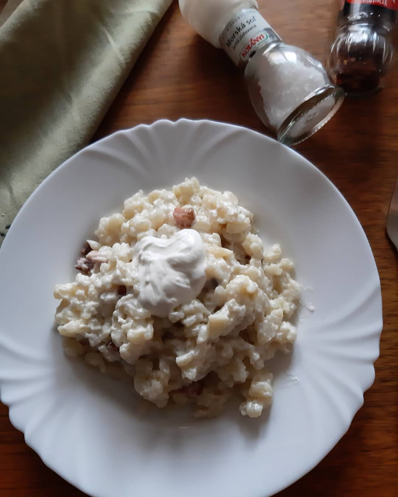

Halušky podľa @estersdairyfreelife — Normy Jedál
🇸🇰🇬🇧⬇️
🇸🇰 Kto by nemal rád bryndzové halušky 🤷♀️ Keď som zistila , že trpím #abkm, tak najviac ma mrzelo, že sa musím vzdať toľkých dobrôt, ale opak je pravdou. Každá surovina sa dá nahradiť a vydariť chutné jedlo 🤤
.
1 väčší nastrúhaný zemiak
Múka (dávam podľa oka, aby cesto nebolo ani veľmi riedke ani tuhé)
Soľ
Trocha vody
100% ovčia bryndza
kokosový alebo sójový krém
Keď máme cesto hotové cez haluškovač nahádžeme do vriacej vody. Precedíme. Premiešame s bryndzou a prípadne s upečenou slaninou a na vrch dochutíme s krémom a soľou. Dobrú chuť 💙
.
🇬🇧 Traditional Slovak food - Bryndzové halušky
You will need for the pasta:
One bigger potato
Flour
Some water
Salt
Shred the potato add some water, flour and salt. When your pastry is ready cut it into small size into a boiling water.
On pan cook some bacon (optional) add the bryndza (sheep cheese) and some vegan cream and salt. Enjoy 🤤
.
#dairyfree #dairyfreerecipes #halusky #bryndza #bryndzovehalusky #prudkojedle #mnamka #dobrejedlo #tradicie #slovaktradition #slovenskonatanieri #praveslovenske #slovenskejedlo #foodblogger #foodporn #foodphotography #likeforlikes #likesforlikesback #solnicka #bestfood #dnesjem #foodlover #foodinspiration